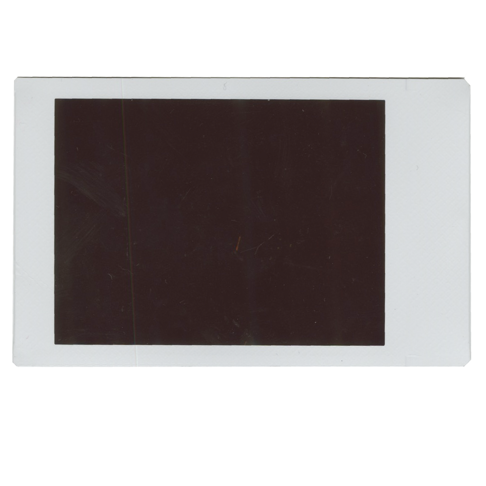
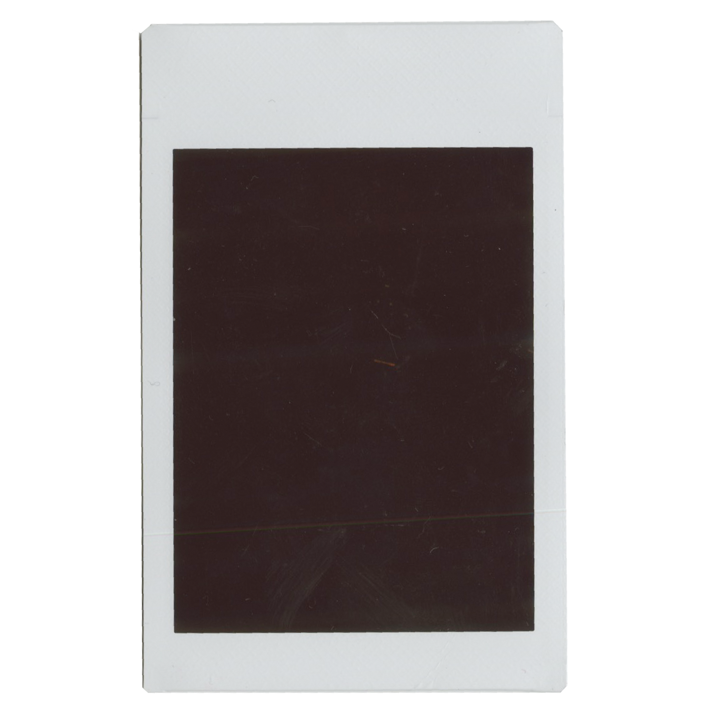
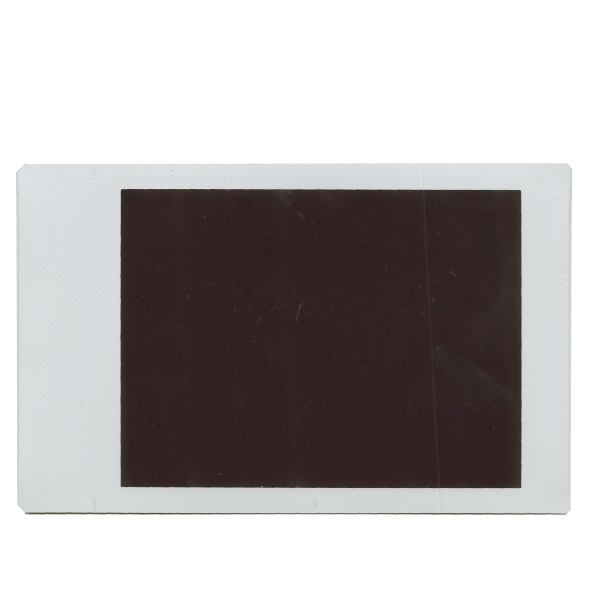
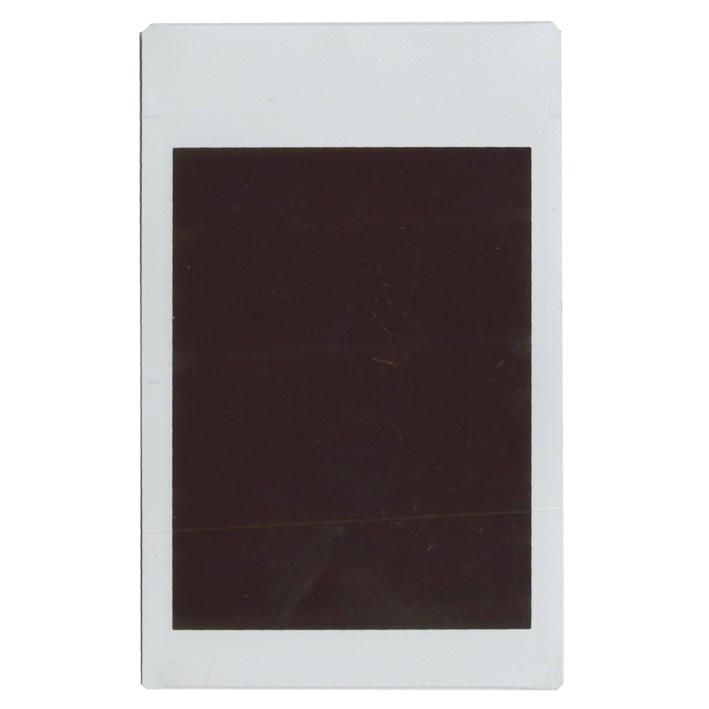

this photo was taken of the strand in new york city.
i've always loved going into a new world through literature. i get to escape my real world problems and put myself in the shoes of a new character.
since moving to new york, i visit the strand at least once a week. it is safe to say that i have spent HUNDREDS of dollars on books here alone.
the first time i ever came here was when i got accepted into parsons and went to tour.
as i am coding this website, my current read is the bell jar by sylvia plath.

this photo was taken of the snow in the upper east side.
how magical a day was the first fall of snow of the year!!! i went to central park with my best friends and play in the snow. it was so nostalgic and warming to watch all of the little children of manhattan gather to go sledding.
growing up in new york, i was always used to feet snow consistently piled up near my driveway. i have memories of it snowing on every major colder holiday from halloween to st. patrick’s day.
on this day, school was canceled!
but now, since i've moved back here for school, it's only snowed a handful of times, and has never been more than a few inches MAX.

this photo was taken of the stairs of a gallery.
gallery openings on thursday evenings are my favorite activity after a long week of classes.
at these openings there is always wine and food.
it's super cool to get to see artists, just like me, exhibit their work in the real world and make a living off of doing what they love.
sometimes, if i'm lucky, i get to meet and speak with the artist.
most of the times they're in the chelsea area, but i've also been all over manhattan!

this photo was taken of printed matter in new york city.
most people who study or are interested in design in manhattan have definitely been to printed matter (and if you haven't i highly recommend).
i love to come here for inspiration and manifestations of what my work and future could be like.
the most recent book i made was for my typography class about home.
my goal is to sell one of my books there by the time i graduate.
there are two locations, chelsea (the main one) and the LES, this was taken in chelsea.
a few weeks ago, i participated in my own book fair with the school (spitting image) and it was such a fun experience to get my foot in the door of the professional world.

this photo was taken of the mannequins inside of parsons school of design.
i currently attend university here and am in my second year, studying communication design.
living in manhattan and doing what i love for school and work feels so unreal.
i love having the city as inspiration around me and the people i've met on my journey through school have all been so cool.
this website was actually coded as a class project for my 'core 2: interaction' class.

this photo was taken of the jefferson market library in new york city.
there so many interesting books here…but i've actually never checked out a book from a new york public library…i prefer to own them.
i prefer to use this library as a study spot, which i enjoy going to frequently.
the building has incredible architectural design. my favorite part is the beautiful stained glass all over the walls in the whole library.
it's located in the west village and is such a cozy spot to get to do work
throughout the library they have so many cool things to explore and so many levels

this photo was taken of the metropolitan museum of art in new york city.
i try to go here as much while i still get free admission as a student.
it’s by far my favorite museum in all of new york.
no matter how many times i go, i still feel like i haven’t seen a fraction of what’s there. every time i go i discover a new part.
i love seeing other artists there sketching/drawinging/painting their own versions of the originals.
as i am coding this website, i most recently went to see a new textile exhibit just last weekend.

this photo was taken of an air vent in alphabet city.
i took this photo on the way to my favorite cafe: bcup.
it's such a hidden gem. i love doing work on their comfy couches and they have THE BEST banana bread i have ever had in my life.
alphabet city is definitely one of the most underrated parts of manhattan.
my friends and i call it alphabet soup…
i love exploring the different stores, restaurants, & bars they have there.

this photo was taken of gramercy park.
i am including this purely for manifestation purposes.
currently, i live a few blocks from gramercy park, and i take every opportunity i can to walk through it on my way to any destination.
walking around at night is especially magical, when you get to see all the rich, lit up apartments. if you peer in you can see wood paneled walls and rows and rows of leather-bound books.
so, while i may not currently possess the key to gramercy park, i will one day.

this photo was taken of the inside of a bus in new york city.
i definitely prefer taking the bus over subway.
but i've heard so many stories of people getting fined so now i take the bus with a bit more fear and i do pay on occasion…
when i first got to the city i remember thinking how nice it was that it was “free.”
the buses are so much cleaner and you don't have to take stairs. but sometimes i get stuck in traffic and it takes over an hour to get to my supposed “20 minute long” stop.
i love how in new york you can take public transport to take you almost anywhere.

this photo was taken of the sunset over the streets in greenwich village.
i remember that day the weather was so lovely and that's all anyone would talk about on the streets.
the photo does not do the colors of the sky justice at all. but then again, photos never do.
since i can remember, i've always felt the need to take a picture of the sunset. but it's kind of more rare to be able to actually see them in manhattan.
that day, i was feeling inspired so i bought a sketch book from blick and drew in madison square park.

this photo was taken of the inside hallway of an apartment building in new york city.
i live in this apartment building with my three lovely roommates, ceci, ella, & lily.
our lease started april 1, 2023, and will now end april 30, 2024. but we just signed a lease to a new place!
we live in a six floor walk up and moved up all of our items from the dorms to here ourselves…would not recommend, but we are much stronger from this. we are hiring movers to move our stuff out this time.
this was the first time i ever lived in a real home without my family. the first time i started to feel like a real adult.
here is where i've learned to take care of myself.